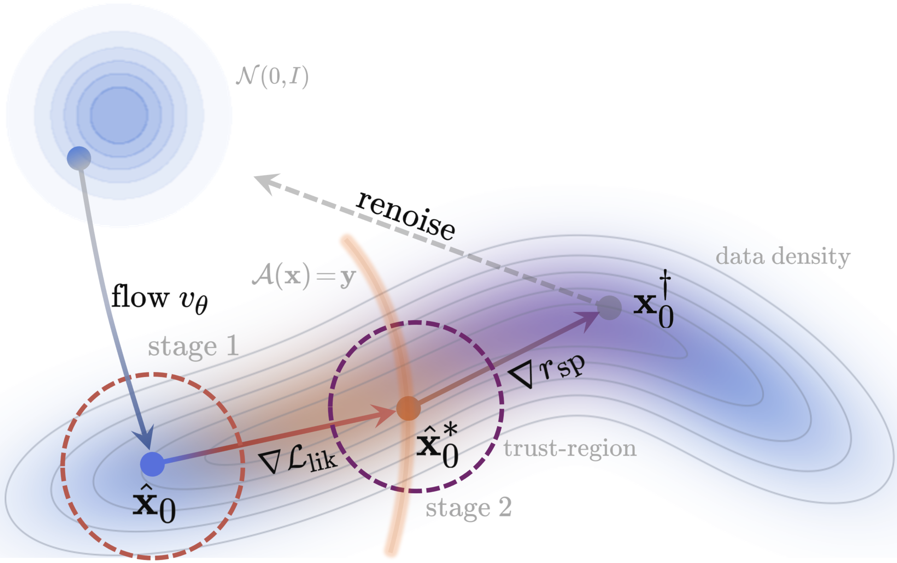

Abstract
We consider the problem of mono-to-stereo audio upmixing: generating a high-fidelity two-channel stereo signal from a single-channel recording. The task is fundamentally ill-posed, i.e., many stereo signals are consistent with a given mono recording. An effective upmixer must therefore generate a realistic, musically coherent stereo image while preserving the underlying audio content. Previous approaches have relied on signal-processing driven decorrelation, ambience extraction and supervised learning, offering limited spatial control or requiring task-specific training. In response, we propose AURA (Audio Upmixing using Reward-tilted Flows), which reformulates upmixing as a generative inverse problem using a pretrained flow prior. To enable controllable spatial imaging, we design a reward-tilted posterior sampler whose reward penalizes divergences between generated and target distributions of inter-channel cues. Composing forward operators further enables joint restoration and upmixing without retraining or finetuning. Objective and subjective evaluations on real-world music recordings from MUSDB18-HQ demonstrate our method's effectiveness relative to several baselines.
Method

Mono-to-Stereo Upmixing
TODO: one sentence describing the comparison and the baselines.
Bandwidth Extension
TODO: one sentence describing the low-pass degradation and restoration task.
Listening Test Results
Citation
@inproceedings{TODO2027,
title = {TODO},
author = {TODO},
booktitle = {TODO},
year = {2027}
}Data and Licensing
TODO: add MUSDB18-HQ attribution and per-track license notes before making this page public. Several tracks are licensed CC BY-NC-SA.